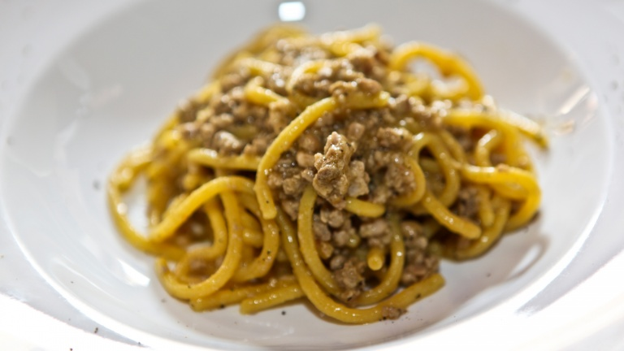
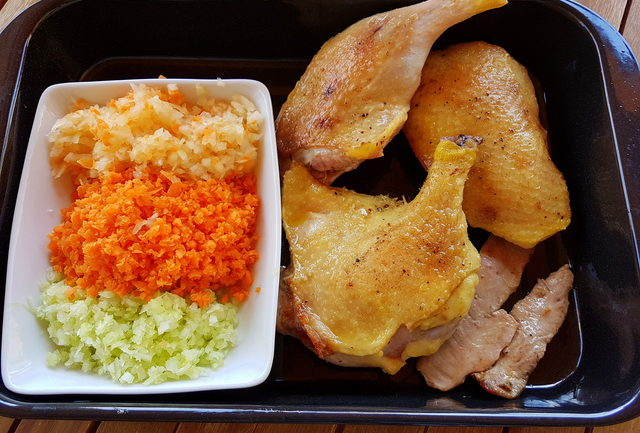

Bigoli con l'anatra (duck ragu)

Description
Bigoli is a usually fresh pasta, mostly eaten in Veneto. It‘s made with flour, eggs (often duck eggs), salt, water or milk and sometimes butter.It looks like very thick spaghetti and is about 3-4mm in diameter. Traditionally this pasta was made with a press called a torchio or bigolaro which had to be wound by hand as the pasta dough passed through the holes in the bottom.
Bigoli is most often eaten with various fat-rich sauces, the most well-known bigoli recipe is duck ragu. In the past, the traditional recipe for this ragu involved cooking the pasta in a fatty broth in which a young duck had been boiled. The Venetians then made a sauce with flavored butter and the offal of the duck, which they ate with the bigoli. The duck itself was eaten after.
Ingredients:
- 1 duck cut into quarters or duck pieces
- 2 celery stalks peeled and finely chopped
- 1 small onion finely chopped
- 2 carrots finely chopped
- 2 garlic cloves finely chopped
- 1/2 cup white wine
- 1 cup chicken broth I used 1 stock cube
- 3 tbsp tomato concentrate
- 1 tbsp fresh sage chopped
- 1 tbsp fresh rosemary chopped
- 1 fresh bay leaf or 1/2 tsp dried
- 3-4 tbsp extra virgin olive oil
- 500 g fresh bigoli (1.1 lbs) or thick spaghetti
- Freshly grated parmigiano or grana cheese for serving
- salt for pasta, to season duck and to taste
- black pepper to season duck and to taste

Steps:
- Heat the oil in a heavy-duty pot or deep frying pan.
- Season the duck pieces with salt and pepper and place them skin side down in the pot.
- Sear until the skin is browned and crisp.
- Turn the pieces over and brown the other sides
- Remove the duck and pour off all but about 1 tablespoon of the rendered fat and discard
- Reduce the heat to medium low and add the celery, onion, and carrot.
- Cook, stirring frequently until the vegetables are softened.
- Add the garlic and cook for about 1 minute.
- Pour in the wine and increase the heat to high.
- Boil until wine is reduced by 1/2, then reduce the heat to medium.
- Add the broth, tomato concentrate, sage, rosemary and bay leaf, stirring to combine.
- Return the duck to the pot and bring the liquid to a boil.
- Reduce the heat to low, just enough to maintain a gentle simmer.
- Cover the pot and simmer until the meat is tender, approx 1.5 to 2 hours. Be careful not to let the duck dry out.
- If the sauce starts to dry out add more white wine or chicken broth.
- Remove the duck from the pot and set aside until cool enough to handle.
- Skim the excess fat from the top of the sauce with a large spoon.
- If the sauce seems thin, continue simmering until thickened to desired consistency.
- Discard the duck skin and cut the meat off the leg bones.
- Shred or cut all the duck meat into very small pieces
- Add the meat to the sauce.
- Let the sauce simmer gently for 10 minutes.
- Remove the bay leaf and season to taste with salt and pepper.
- When ready to serve, bring a large pot of salted water to a boil over high heat.
- Cook the bigoli al dente according to the instructions on the packet if store bought. 6-8 minutes if homemade.
- Reserve about 1 cup of the cooking water and then drain the pasta.
- Return the pasta to the pot and toss it with some of the ragù, adding a little of the pasta cooking water if it seems dry.
- Serve the pasta with more ragù spooned over the top, sprinkled with the grated cheese.
Back to home